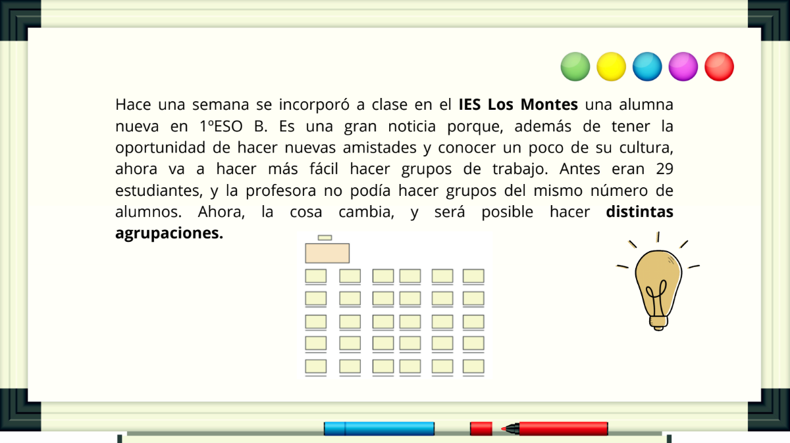
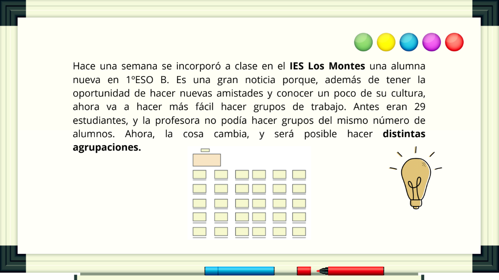

Distintas agrupaciones.


Verdadero
Efectivamente, con 29 alumnos no se pude hacer grupos del mismo número de personas sin que sobre nadie. ¡29 es un número primo! Los únicos divisores son el 1 y el 29.
Obra publicada con Licencia Creative Commons Reconocimiento Compartir igual 4.0